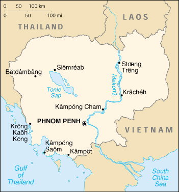

|
Cambodia | |
| Introduction Geography People Government Economy Communications Transportation Military Transnational Issues | ||
|  | ||
| Cambodia | Introduction | Top of Page |
| Background: | Following a five-year struggle, communist Khmer Rouge forces captured Phnom Penh in 1975 and ordered the evacuation of all cities and towns; over 1 million displaced people died from execution or enforced hardships. A 1978 Vietnamese invasion drove the Khmer Rouge into the countryside and touched off 13 years of fighting. UN-sponsored elections in 1993 helped restore some semblance of normalcy, as did the rapid diminishment of the Khmer Rouge in the mid-1990s. A coalition government, formed after national elections in 1998, brought renewed political stability and the surrender of remaining Khmer Rouge forces. |
| Cambodia | Geography | Top of Page |
| Location: | Southeastern Asia, bordering the Gulf of Thailand, between Thailand, Vietnam, and Laos |
| Geographic coordinates: | 13 00 N, 105 00 E |
| Map references: | Southeast Asia |
| Area: |
total:
181,040 sq km
land: 176,520 sq km water: 4,520 sq km |
| Area - comparative: | slightly smaller than Oklahoma |
| Land boundaries: |
total:
2,572 km
border countries: Laos 541 km, Thailand 803 km, Vietnam 1,228 km |
| Coastline: | 443 km |
| Maritime claims: |
contiguous zone:
24 NM
continental shelf: 200 NM exclusive economic zone: 200 NM territorial sea: 12 NM |
| Climate: | tropical; rainy, monsoon season (May to November); dry season (December to April); little seasonal temperature variation |
| Terrain: | mostly low, flat plains; mountains in southwest and north |
| Elevation extremes: |
lowest point:
Gulf of Thailand 0 m
highest point: Phnum Aoral 1,810 m |
| Natural resources: | timber, gemstones, some iron ore, manganese, phosphates, hydropower potential |
| Land use: |
arable land:
13%
permanent crops: 0% permanent pastures: 11% forests and woodland: 66% other: 10% (1993 est.) |
| Irrigated land: | 920 sq km (1993 est.) |
| Natural hazards: | monsoonal rains (June to November); flooding; occasional droughts |
| Environment - current issues: | illegal logging activities throughout the country and strip mining for gems in the western region along the border with Thailand have resulted in habitat loss and declining biodiversity (in particular, destruction of mangrove swamps threatens natural fisheries); soil erosion; in rural areas, a majority of the population does not have access to potable water; toxic waste delivery from Taiwan sparked unrest in Kampong Saom (Sihanoukville) in December 1998 |
| Environment - international agreements: |
party to:
Biodiversity, Climate Change, Desertification, Endangered Species, Marine Life Conservation, Ship Pollution, Tropical Timber 94, Wetlands
signed, but not ratified: Law of the Sea, Marine Dumping |
| Geography - note: | a land of paddies and forests dominated by the Mekong River and Tonle Sap |
| Cambodia | People | Top of Page |
| Population: |
12,491,501
note: estimates for this country explicitly take into account the effects of excess mortality due to AIDS; this can result in lower life expectancy, higher infant mortality and death rates, lower population and growth rates, and changes in the distribution of population by age and sex than would otherwise be expected (July 2001 est.) |
| Age structure: |
0-14 years:
41.25% (male 2,626,821; female 2,526,510)
15-64 years: 55.28% (male 3,253,611; female 3,651,129) 65 years and over: 3.47% (male 177,577; female 255,853) (2001 est.) |
| Population growth rate: | 2.25% (2001 est.) |
| Birth rate: | 33.16 births/1,000 population (2001 est.) |
| Death rate: | 10.65 deaths/1,000 population (2001 est.) |
| Net migration rate: | 0 migrant(s)/1,000 population (2001 est.) |
| Sex ratio: |
at birth:
1.05 male(s)/female
under 15 years: 1.04 male(s)/female 15-64 years: 0.89 male(s)/female 65 years and over: 0.69 male(s)/female total population: 0.94 male(s)/female (2001 est.) |
| Infant mortality rate: | 65.41 deaths/1,000 live births (2001 est.) |
| Life expectancy at birth: |
total population:
56.82 years
male: 54.62 years female: 59.12 years (2001 est.) |
| Total fertility rate: | 4.74 children born/woman (2001 est.) |
| HIV/AIDS - adult prevalence rate: | 4.04% (1999 est.) |
| HIV/AIDS - people living with HIV/AIDS: | 220,000 (1999 est.) |
| HIV/AIDS - deaths: | 14,000 (1999 est.) |
| Nationality: |
noun:
Cambodian(s)
adjective: Cambodian |
| Ethnic groups: | Khmer 90%, Vietnamese 5%, Chinese 1%, other 4% |
| Religions: | Theravada Buddhist 95%, other 5% |
| Languages: | Khmer (official) 95%, French, English |
| Literacy: |
definition:
age 15 and over can read and write
total population: 35% male: 48% female: 22% (1990 est.) |
| Cambodia | Government | Top of Page |
| Country name: |
conventional long form:
Kingdom of Cambodia
conventional short form: Cambodia local long form: Preahreacheanachakr Kampuchea local short form: Kampuchea former: Khmer Republic, Kampuchea Republic |
| Government type: | multiparty liberal democracy under a constitutional monarchy established in September 1993 |
| Capital: | Phnom Penh |
| Administrative divisions: | 20 provinces (khett, singular and plural) and 4 municipalities* (krong, singular and plural); Banteay Mean Cheay, Batdambang, Kampong Cham, Kampong Chhnang, Kampong Spoe, Kampong Thum, Kampot, Kandal, Kaoh Kong, Keb*, Kracheh, Mondol Kiri, Otdar Mean Cheay, Pailin*, Phnum Penh*, Pouthisat, Preah Seihanu* (Sihanoukville), Preah Vihear, Prey Veng, Rotanah Kiri, Siem Reab, Stoeng Treng, Svay Rieng, Takev |
| Independence: | 9 November 1953 (from France) |
| National holiday: | Independence Day, 9 November (1953) |
| Constitution: | promulgated 21 September 1993 |
| Legal system: | primarily a civil law mixture of French-influenced codes from the United Nations Transitional Authority in Cambodia (UNTAC) period, royal decrees, and acts of the legislature, with influences of customary law and remnants of communist legal theory; increasing influence of common law in recent years |
| Suffrage: | 18 years of age; universal |
| Executive branch: |
chief of state:
King Norodom SIHANOUK (reinstated 24 September 1993)
head of government: Prime Minister HUN SEN (since 30 November 1998) cabinet: Council of Ministers appointed by the monarch elections: none; the monarch is chosen by a Royal Throne Council; prime minister appointed by the monarch after a vote of confidence by the National Assembly |
| Legislative branch: |
bicameral consists of the National Assembly (122 seats; members elected by popular vote to serve five-year terms) and the Senate (61 seats; two members appointed by the monarch, two elected by the National Assembly, and 57 elected by "functional constituencies"; members serve five-year terms
elections: National Assembly - last held 26 July 1998 (next to be held NA 2003); Senate - last held 2 March 1999 (next to be held NA 2004) election results: National Assembly - percent of vote by party - CPP 41%, FUNCINPEC 32%, SRP 14%, other 13%; seats by party - CPP 64, FUNCINPEC 43, SRP 15; Senate - seats by party - CPP 31, FUNCINPEC 21, SRP 7 |
| Judicial branch: | Supreme Council of the Magistracy (provided for in the constitution and formed in December 1997); Supreme Court (and lower courts) exercises judicial authority |
| Political parties and leaders: | Buddhist Liberal Party or BLP [IENG MOULY]; Cambodian Pracheachon Party or Cambodian People's Party or CPP [CHEA SIM]; Khmer Citizen Party or KCP [NGUON SOEUR]; National United Front for an Independent, Neutral, Peaceful, and Cooperative Cambodia or FUNCINPEC [Prince NORODOM RANARIDDH]; Sam Rangsi Party or SRP (formerly Khmer Nation Party or KNP) [SAM RANGSI] |
| Political pressure groups and leaders: | NA |
| International organization participation: | ACCT, ARF, AsDB, ASEAN, CP, ESCAP, FAO, G-77, IAEA, IBRD, ICAO, ICRM, IDA, IFAD, IFC, IFRCS, ILO, IMF, IMO, Intelsat (nonsignatory user), Interpol, IOC, IOM (observer), ISO (subscriber), ITU, NAM, OPCW, UN, UNCTAD, UNESCO, UNIDO, UPU, WFTU, WHO, WIPO, WMO, WToO, WTrO (observer) |
| Diplomatic representation in the US: |
chief of mission:
Ambassador Roland ENG
chancery: 4500 16th Street NW, Washington, DC 20011 telephone: [1] (202) 726-7742 FAX: [1] (202) 726-8381 |
| Diplomatic representation from the US: |
chief of mission:
Ambassador Kent M. WIEDEMANN
embassy: 16-18 Mongkol lem St. 228, Phnom Penh mailing address: Box P, APO AP 96546 telephone: [855] (23) 216-436 FAX: [855] (23) 216-437 |
| Flag description: | three horizontal bands of blue (top), red (double width), and blue with a white three-towered temple representing Angkor Wat outlined in black in the center of the red band |
| Cambodia | Economy | Top of Page |
| Economy - overview: | Cambodia's economy slowed dramatically in 1997-98 due to the regional economic crisis, civil violence, and political infighting. Foreign investment and tourism fell off. In 1999, the first full year of peace in 30 years, progress was made on economic reforms and growth resumed at 4%. GDP growth for 2000 had been projected to reach 5.5%, but the worst flooding in 70 years severely damaged agricultural crops, and high oil prices hurt industrial production, and growth for the year is estimated at only 4%. Tourism is Cambodia's fastest growing industry, with arrivals up 34% in 2000. The long-term development of the economy after decades of war remains a daunting challenge. The population lacks education and productive skills, particularly in the poverty-ridden countryside, which suffers from an almost total lack of basic infrastructure. Fear of renewed political instability and corruption within the government discourage foreign investment and delay foreign aid. On the brighter side, the government is addressing these issues with assistance from bilateral and multilateral donors. |
| GDP: | purchasing power parity - $16.1 billion (2000 est.) |
| GDP - real growth rate: | 4% (2000 est.) |
| GDP - per capita: | purchasing power parity - $1,300 (2000 est.) |
| GDP - composition by sector: |
agriculture:
43%
industry: 20% services: 37% (1998 est.) |
| Population below poverty line: | 36% (1997 est.) |
| Household income or consumption by percentage share: |
lowest 10%:
2.9%
highest 10%: 33.8% (1997) |
| Inflation rate (consumer prices): | 1.6% (2000 est.) |
| Labor force: | 6 million (1998 est.) |
| Labor force - by occupation: | agriculture 80% (1999 est.) |
| Unemployment rate: | 2.8% (1999 est.) |
| Budget: |
revenues:
$363 million
expenditures: $532 million, including capital expenditures of $225 million (2000 est.) |
| Industries: | garments, tourism, rice milling, fishing, wood and wood products, rubber, cement, gem mining, textiles |
| Industrial production growth rate: | NA% |
| Electricity - production: | 147 million kWh (1999) |
| Electricity - production by source: |
fossil fuel:
59.18%
hydro: 40.82% nuclear: 0% other: 0% (1999) |
| Electricity - consumption: | 136.7 million kWh (1999) |
| Electricity - exports: | 0 kWh (1999) |
| Electricity - imports: | 0 kWh (1999) |
| Agriculture - products: | rice, rubber, corn, vegetables |
| Exports: | $942 million (f.o.b., 2000 est.) |
| Exports - commodities: | timber, garments, rubber, rice, fish |
| Exports - partners: | Vietnam 18%, Thailand 15%, US 10%, Singapore 8%, China 5% (1997) |
| Imports: | $1.3 billion (f.o.b., 2000 est.) |
| Imports - commodities: | cigarettes, gold, construction materials, petroleum products, machinery, motor vehicles |
| Imports - partners: | Thailand 16%, Vietnam 9%, Japan 7%, Hong Kong 5%, China 5% (1997) |
| Debt - external: | $829 million (1999 est.) |
| Economic aid - recipient: | $548 million pledged in grants and concessional loans for 2001 by international donors |
| Currency: | riel (KHR) |
| Currency code: | KHR |
| Exchange rates: | riels per US dollar - 3,909.0 (January 2001), 3,840.8 (2000), 3,807.8 (1999), 3,744.4 (1998), 2,946.3 (1997), 2,624.1 (1996) |
| Fiscal year: | calendar year |
| Cambodia | Communications | Top of Page |
| Telephones - main lines in use: | 21,800 (mid-1998) |
| Telephones - mobile cellular: | 80,000 (2000) |
| Telephone system: |
general assessment:
adequate landline and/or cellular service in Phnom Penh and other provincial cities; rural areas have little telephone service
domestic: NA international: adequate but expensive landline and cellular service available to all countries from Phnom Penh and major provincial cities; satellite earth station - 1 Intersputnik (Indian Ocean region) |
| Radio broadcast stations: | AM 7, FM 3, shortwave 3 (1999) |
| Radios: | 1.34 million (1997) |
| Television broadcast stations: | 5 (1999) |
| Televisions: | 94,000 (1997) |
| Internet country code: | .kh |
| Internet Service Providers (ISPs): | 2 (2000) |
| Internet users: | NA |
| Cambodia | Transportation | Top of Page |
| Railways: |
total:
603 km
narrow gauge: 603 km 1.000-m gauge |
| Highways: |
total:
35,769 km
paved: 4,165 km unpaved: 31,604 km (1997) |
| Waterways: |
3,700 km
note: navigable all year to craft drawing 0.6 m or less; 282 km navigable to craft drawing as much as 1.8 m |
| Ports and harbors: | Kampong Saom (Sihanoukville), Kampot, Krong Kaoh Kong, Phnom Penh |
| Merchant marine: |
total:
295 ships (1,000 GRT or over) totaling 1,305,932 GRT/1,853,487 DWT
ships by type: bulk 22, cargo 237, chemical tanker 1, combination bulk 3, container 8, liquefied gas 1, livestock carrier 2, multi-functional large-load carrier 1, passenger/cargo 1, petroleum tanker 7, refrigerated cargo 6, roll on/roll off 5, short-sea passenger 1 note: includes some foreign-owned ships registered here as a flag of convenience: Cyprus 3, South Korea 1, Malta 1, Panama 1, Russia 1, Singapore 1 (2000 est.) |
| Airports: | 19 (2000 est.) |
| Airports - with paved runways: |
total:
6
2,438 to 3,047 m: 2 1,524 to 2,437 m: 2 914 to 1,523 m: 2 (2000 est.) |
| Airports - with unpaved runways: |
total:
13
1,524 to 2,437 m: 2 914 to 1,523 m: 11 (2000 est.) |
| Heliports: | 3 (2000 est.) |
| Cambodia | Military | Top of Page |
| Military branches: |
Royal Cambodian Armed Forces (RCAF), including Army, Navy, and Air Force - created in 1993 by the merger of the Cambodian People's Armed Forces and the two noncommunist resistance armies
note: Khmer Rouge and royalist insurgent forces were integrated into the RCAF in 1999 |
| Military manpower - military age: | 18 years of age |
| Military manpower - availability: | males age 15-49: 2,877,137 (2001 est.) |
| Military manpower - fit for military service: | males age 15-49: 1,610,761 (2001 est.) |
| Military manpower - reaching military age annually: | males: 162,643 (2001 est.) |
| Military expenditures - dollar figure: | $112 million (FY01 est.) |
| Military expenditures - percent of GDP: | 3% (FY01 est.) |
| Cambodia | Transnational Issues | Top of Page |
| Disputes - international: | portions of boundary with Vietnam are disputed; parts of border with Thailand are indefinite |
| Illicit drugs: | possible money laundering; narcotics-related corruption reportedly involving some in the government, military, and police; possible small-scale opium, heroin, and amphetamine production; large producer of cannabis for the international market |
{kind=link}
{kind=link}